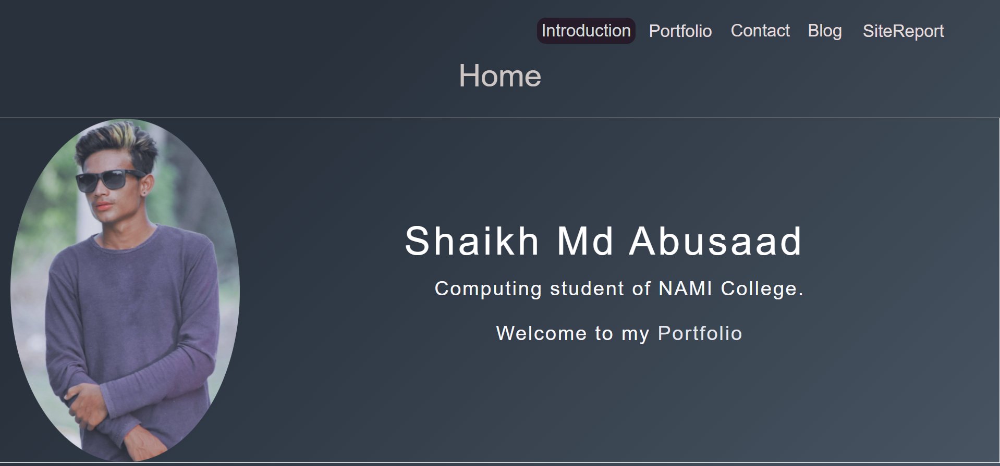
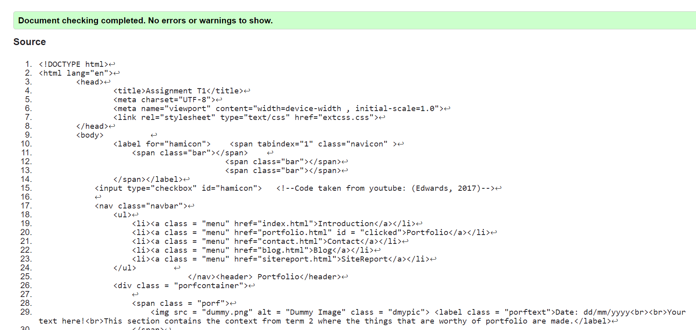
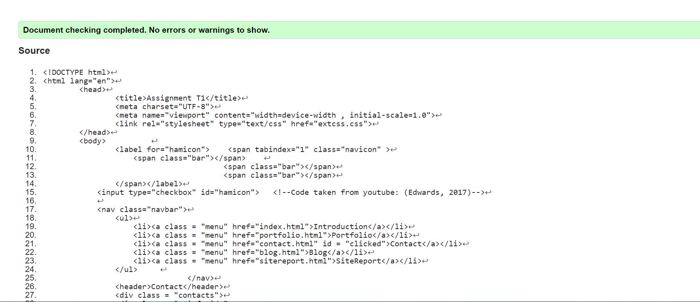
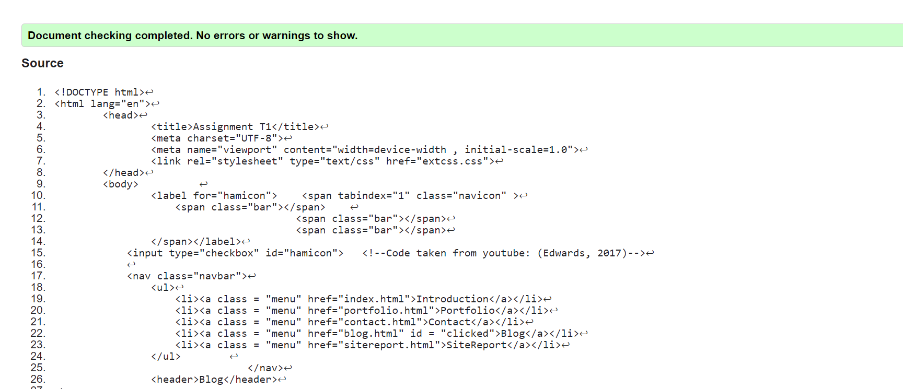
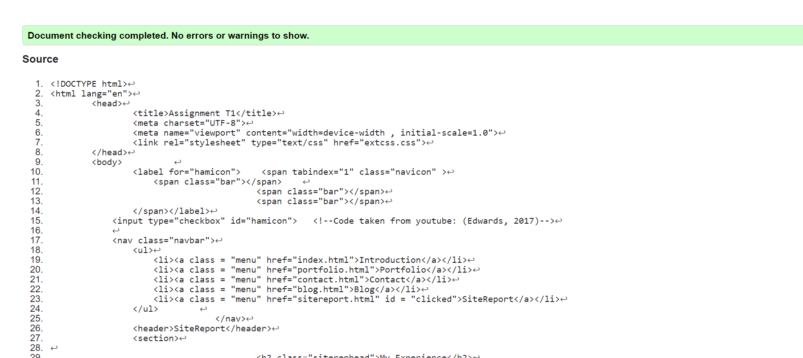
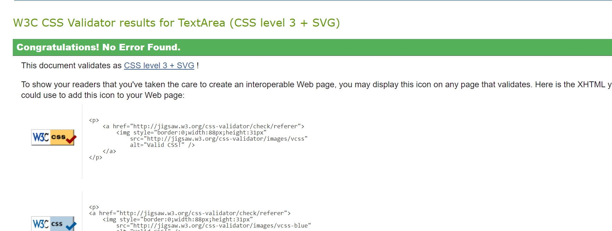

Hello, I am Shekh Md Abusad and I am here to share my experience of studying developing, coding, etc of the website.
I am curious student on learning information technology and coding language. I joined Naya Aayam Multi-Disciplinary Institute for BSc. Software Engineering after completing my higher level studies from Pentagon International College with an excellent outcome. Our teacher Ankit sir is the best teacher and we are capable of building up the website in CSS and HTML. I hope that I have been able to convince you of my excellence ccapabilities and my passionate motivation to start studying BSc. Computing at University of Northampton.
It was very fun learning Web Development. Ankit sir taught us to push codes on GitHub, taught us to build websites using HTML, CSS in very simple and unique way. During my higher studies times, I used to write inline CSS but here, Ankit sir taught us to write external CSS, which is very easy to do and makes the website more user-friendly and responsive. Sometimes I used to make simple website with the help of youtube tutorials and I practiced and learned the basics of HTML from that. Web Development subject doesn't seems difficult due to consistent support of our tutor and my motivation and regular hardwork in understanding the codes and developing the websites.
20 Feb, 2022
The screenshot above was the first design of my website of term 1 assignment. The website didn't look the way I expected it to look, so I changed its look and made the website as shown in screenshot below:
23 Feb, 2022
So, the image above is the final result of the website. The website is in dark gradient and looks cool somehow. The website is responsive, user-friendly and have the finest User Interface (UI). The animations also have been applied on some portions of the website. I have set border radius in my picture to make it look aesthetic. The navigation menu, background color of the body and the heading of the context is consistent across all pages of the website.
Users can redirect to each pages with the help of navigation menu which is consistent across all pages. The navigation menu hides behind hamburger icon in responsive point of view. Sans-serif font have been used in the website. Some logos taken from the internet has been used in the contact page and have given proper citation in the html page and reference in the site report to avoid plagiarism. The dummy image used in portfolio was made by me using MS Paint. The validator has been used to check if the HTML and CSS codes validate or not and screenshots of them are posted below.
Homepage code validated
Portfolio code validated
Contact code validated
Blog Code validated
SiteReport Code validated
CSS validated
Edwards, C. (2017) Responsive Menu With Media Queries (Checkbox Trick) - Using Only CSS3. YouTube[online]. Available from: https://youtube.com/watch?v=xMTs8tAapnQ/ [Accessed 20 Feb 2022]
It is used for making the hamburger icon functionable in responsive view with only HTML and CSS.
The code is used in evey HTML pages and proper citation has been provided.
[Anon.] [n.d] VectorStock[online]. Available from: https://www.vectorstock.com/royalty-free-vector/phone-icon-in-black-and-white-telephone-symbol-vector-22968155 [Accessed 24 Feb 2022].
It is used in contact page to let the users know my contact number.
[Anon.] [n.d] PNGITEM[online]. Available from https://www.pngitem.com/middle/JxixT_email-icon-black-circle-envelope-email-icon-png/ [Accessed 24 Feb 2022]
It is used in contact page to let the users know my Gmail address/identity.
[Anon.] [n.d] uxwing[online]. Available from: https://uxwing.com/home-location-icon/ [Accessed 24 Feb 2022]
It is used in contact page to let the users know my address.